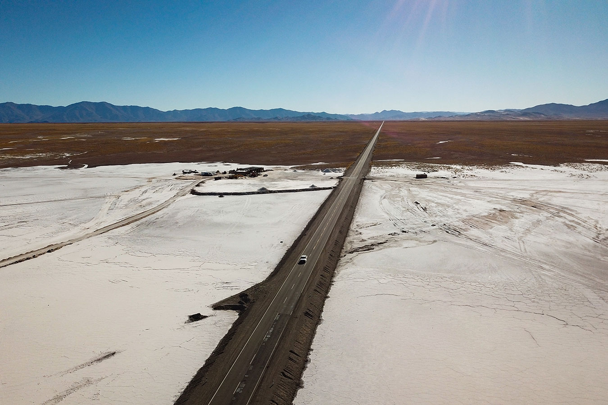
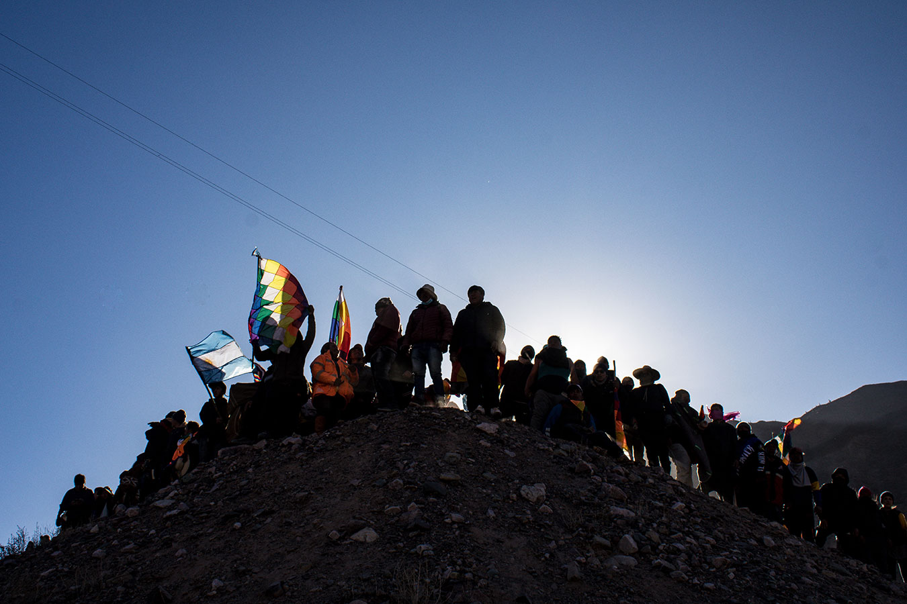

Por favor, gire su dispositivo para una mejor experiencia visual.
Susi Maresca
Jujuy
|
Inicio
Proyectos
La ruta del litio, voces del agua
Capitulo 1
Capitulo 2
Capitulo 3
Capitulo 4
Capitulo 5
Los Pueblos de la Sal
Tercer Malon de la Paz
Capitulo 6
Capitulo 7
Capitulo 8
Historias
A cielo abierto
Tierra
Noticias
Public. medios nacionales
Public. medios internacionales
Concursos y Publicaciones
Difusión La Ruta del Litio
Entrevistas
Multimedia
Bio
Contacto
Los pueblos de la sal

Tercer malón de la paz
